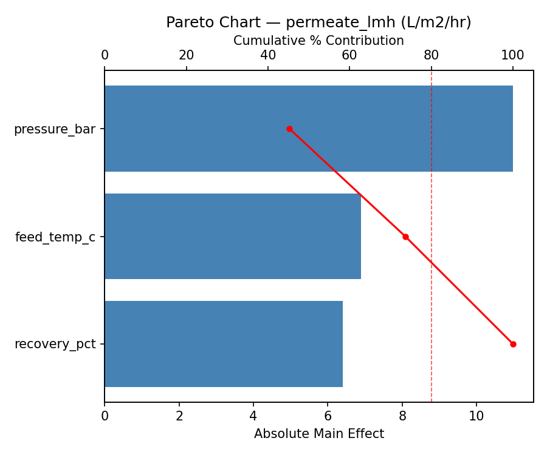
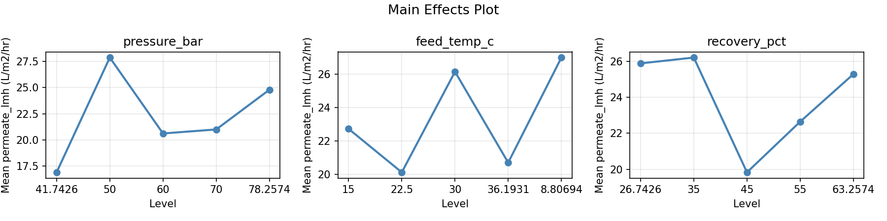
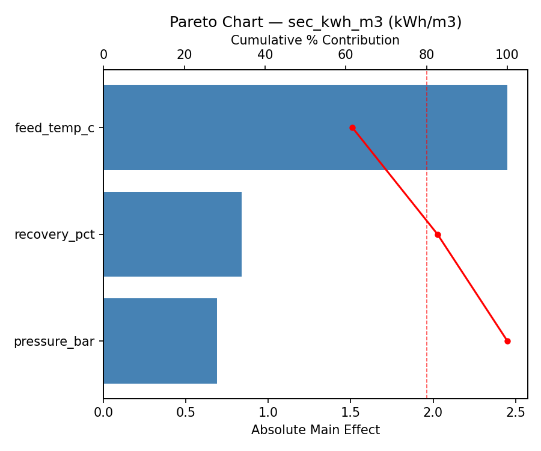
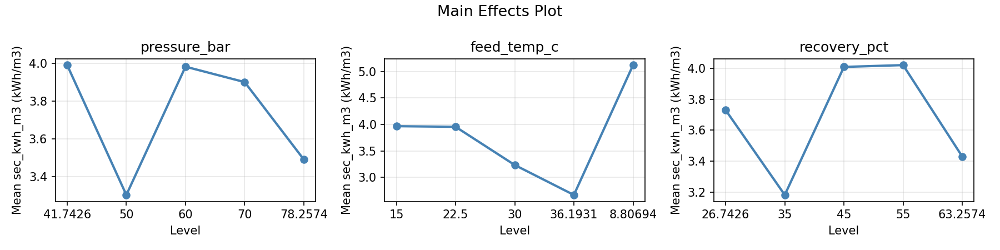
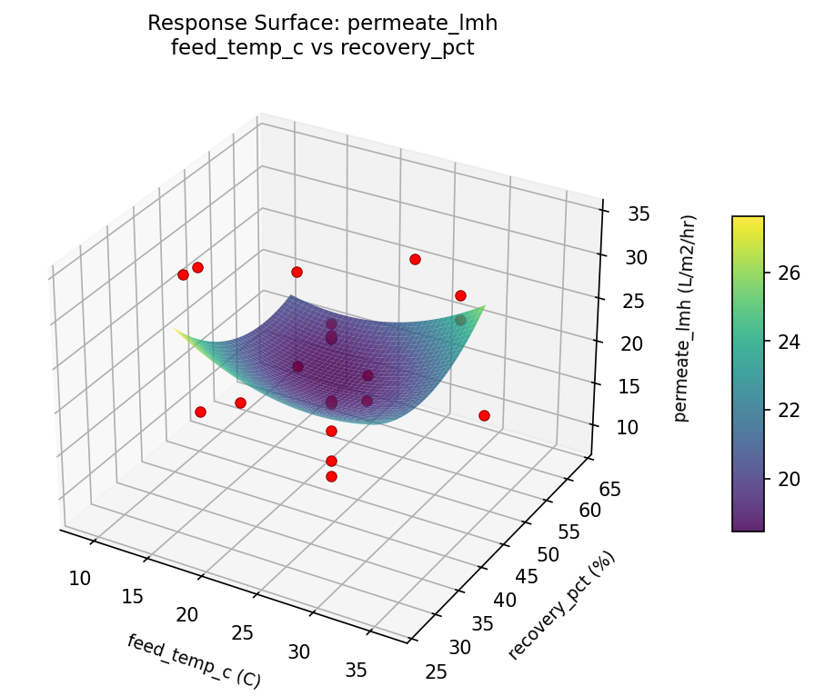
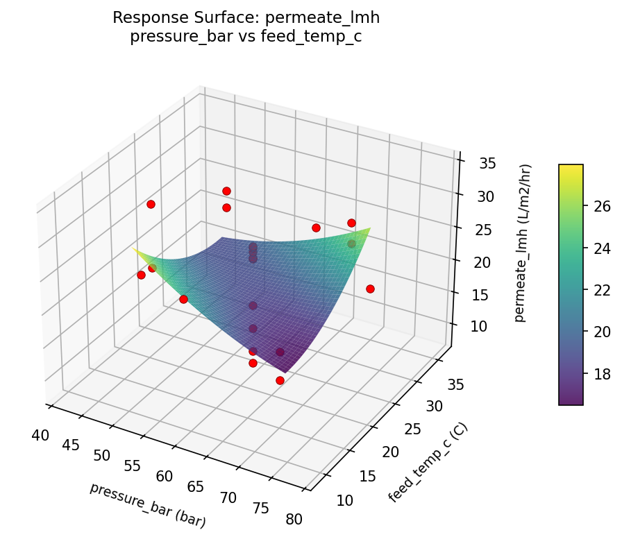
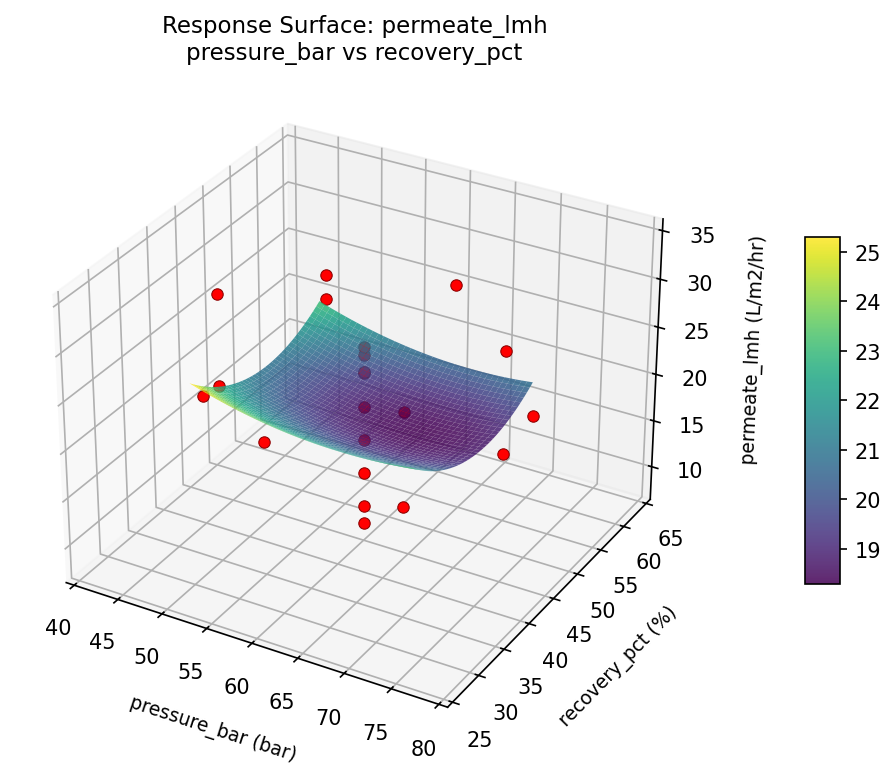
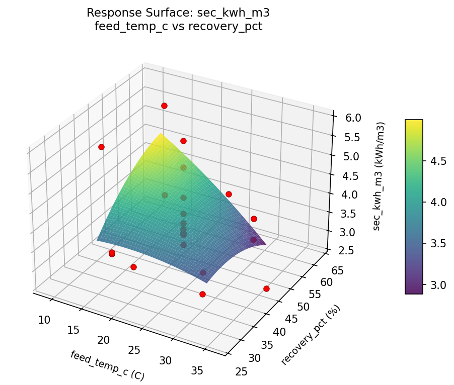
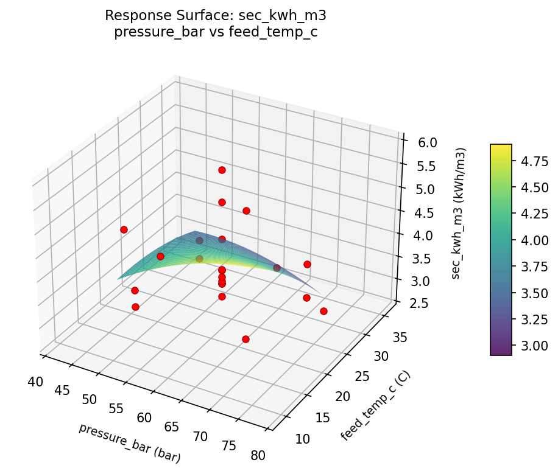
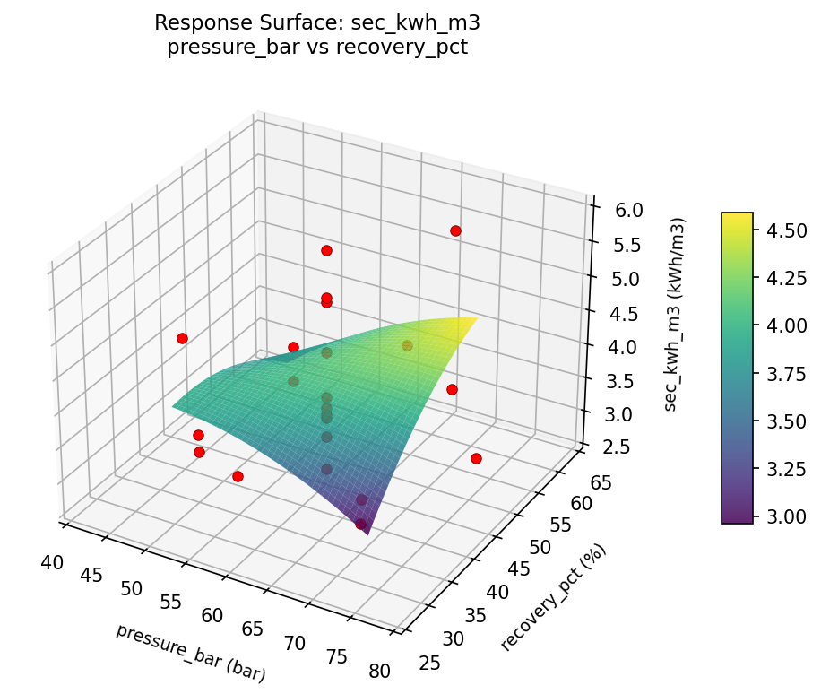

Summary
This experiment investigates seawater desalination efficiency. Central composite design to maximize freshwater recovery and minimize energy use by tuning membrane pressure, feed temperature, and recovery ratio.
The design varies 3 factors: pressure bar (bar), ranging from 50 to 70, feed temp c (C), ranging from 15 to 30, and recovery pct (%), ranging from 35 to 55. The goal is to optimize 2 responses: permeate lmh (L/m2/hr) (maximize) and sec kwh m3 (kWh/m3) (minimize). Fixed conditions held constant across all runs include membrane = RO_polyamide, salinity = 35000ppm.
A Central Composite Design (CCD) was selected to fit a full quadratic response surface model, including curvature and interaction effects. With 3 factors this produces 22 runs including center points and axial (star) points that extend beyond the factorial range.
Quadratic response surface models were fitted to capture potential curvature and factor interactions. The RSM contour plots below visualize how pairs of factors jointly affect each response.
Key Findings
For permeate lmh, the most influential factors were pressure bar (45.2%), feed temp c (28.4%), recovery pct (26.4%). The best observed value was 34.3 (at pressure bar = 60, feed temp c = 22.5, recovery pct = 45).
For sec kwh m3, the most influential factors were feed temp c (61.6%), recovery pct (21.1%), pressure bar (17.3%). The best observed value was 2.67 (at pressure bar = 70, feed temp c = 15, recovery pct = 35).
Recommended Next Steps
- Run confirmation experiments at the predicted optimal settings to validate the model.
- Consider whether any fixed factors should be varied in a future study.
Experimental Setup
Factors
| Factor | Low | High | Unit |
|---|
pressure_bar | 50 | 70 | bar |
feed_temp_c | 15 | 30 | C |
recovery_pct | 35 | 55 | % |
Fixed: membrane = RO_polyamide, salinity = 35000ppm
Responses
| Response | Direction | Unit |
|---|
permeate_lmh | ↑ maximize | L/m2/hr |
sec_kwh_m3 | ↓ minimize | kWh/m3 |
Configuration
{
"metadata": {
"name": "Seawater Desalination Efficiency",
"description": "Central composite design to maximize freshwater recovery and minimize energy use by tuning membrane pressure, feed temperature, and recovery ratio"
},
"factors": [
{
"name": "pressure_bar",
"levels": [
"50",
"70"
],
"type": "continuous",
"unit": "bar"
},
{
"name": "feed_temp_c",
"levels": [
"15",
"30"
],
"type": "continuous",
"unit": "C"
},
{
"name": "recovery_pct",
"levels": [
"35",
"55"
],
"type": "continuous",
"unit": "%"
}
],
"fixed_factors": {
"membrane": "RO_polyamide",
"salinity": "35000ppm"
},
"responses": [
{
"name": "permeate_lmh",
"optimize": "maximize",
"unit": "L/m2/hr"
},
{
"name": "sec_kwh_m3",
"optimize": "minimize",
"unit": "kWh/m3"
}
],
"settings": {
"operation": "central_composite",
"test_script": "use_cases/252_seawater_desalination/sim.sh"
}
}
Experimental Matrix
The Central Composite Design produces 22 runs. Each row is one experiment with specific factor settings.
| Run | pressure_bar | feed_temp_c | recovery_pct |
|---|
| 1 | 60 | 22.5 | 45 |
| 2 | 70 | 15 | 55 |
| 3 | 50 | 30 | 35 |
| 4 | 60 | 36.1931 | 45 |
| 5 | 60 | 22.5 | 45 |
| 6 | 41.7426 | 22.5 | 45 |
| 7 | 60 | 22.5 | 26.7426 |
| 8 | 60 | 22.5 | 45 |
| 9 | 70 | 30 | 35 |
| 10 | 78.2574 | 22.5 | 45 |
| 11 | 60 | 22.5 | 45 |
| 12 | 60 | 8.80694 | 45 |
| 13 | 60 | 22.5 | 45 |
| 14 | 50 | 15 | 55 |
| 15 | 60 | 22.5 | 45 |
| 16 | 70 | 15 | 35 |
| 17 | 60 | 22.5 | 63.2574 |
| 18 | 70 | 30 | 55 |
| 19 | 60 | 22.5 | 45 |
| 20 | 50 | 15 | 35 |
| 21 | 50 | 30 | 55 |
| 22 | 60 | 22.5 | 45 |
Step-by-Step Workflow
1
Preview the design
$ python doe.py info --config use_cases/252_seawater_desalination/config.json
2
Generate the runner script
$ python doe.py generate --config use_cases/252_seawater_desalination/config.json \
--output use_cases/252_seawater_desalination/results/run.sh --seed 42
3
Execute the experiments
$ bash use_cases/252_seawater_desalination/results/run.sh
4
Analyze results
$ python doe.py analyze --config use_cases/252_seawater_desalination/config.json
5
Get optimization recommendations
$ python doe.py optimize --config use_cases/252_seawater_desalination/config.json
6
Generate the HTML report
$ python doe.py report --config use_cases/252_seawater_desalination/config.json \
--output use_cases/252_seawater_desalination/results/report.html
Features Exercised
| Feature | Value |
|---|
| Design type | central_composite |
| Factor types | continuous (all 3) |
| Arg style | double-dash |
| Responses | 2 (permeate_lmh ↑, sec_kwh_m3 ↓) |
| Total runs | 22 |
Analysis Results
Generated from actual experiment runs using the DOE Helper Tool.
Response: permeate_lmh
Top factors: pressure_bar (45.2%), feed_temp_c (28.4%), recovery_pct (26.4%).
Pareto Chart

Main Effects Plot

Response: sec_kwh_m3
Top factors: feed_temp_c (61.6%), recovery_pct (21.1%), pressure_bar (17.3%).
Pareto Chart

Main Effects Plot

Response Surface Plots
3D surfaces fitted with quadratic RSM. Red dots are observed data points.
permeate lmh feed temp c vs recovery pct

permeate lmh pressure bar vs feed temp c

permeate lmh pressure bar vs recovery pct

sec kwh m3 feed temp c vs recovery pct

sec kwh m3 pressure bar vs feed temp c

sec kwh m3 pressure bar vs recovery pct

Full Analysis Output
RSM surface: rsm_permeate_lmh_pressure_bar_vs_feed_temp_c.png
RSM surface: rsm_permeate_lmh_pressure_bar_vs_recovery_pct.png
RSM surface: rsm_permeate_lmh_feed_temp_c_vs_recovery_pct.png
RSM surface: rsm_sec_kwh_m3_pressure_bar_vs_feed_temp_c.png
RSM surface: rsm_sec_kwh_m3_pressure_bar_vs_recovery_pct.png
RSM surface: rsm_sec_kwh_m3_feed_temp_c_vs_recovery_pct.png
=== Main Effects: permeate_lmh ===
Factor Effect Std Error % Contribution
--------------------------------------------------------------
pressure_bar 10.9750 1.3666 45.2%
feed_temp_c 6.8833 1.3666 28.4%
recovery_pct 6.4000 1.3666 26.4%
=== Summary Statistics: permeate_lmh ===
pressure_bar:
Level N Mean Std Min Max
------------------------------------------------------------
41.7426 1 16.9000 0.0000 16.9000 16.9000
50 4 27.8750 4.4425 24.9000 34.3000
60 12 20.6167 6.6379 8.3000 27.0000
70 4 21.0000 6.3282 13.7000 27.7000
78.2574 1 24.8000 0.0000 24.8000 24.8000
feed_temp_c:
Level N Mean Std Min Max
------------------------------------------------------------
15 4 22.7250 8.9905 13.7000 34.3000
22.5 12 20.1167 6.5521 8.3000 26.1000
30 4 26.1500 1.6258 24.6000 27.7000
36.1931 1 20.7000 0.0000 20.7000 20.7000
8.80694 1 27.0000 0.0000 27.0000 27.0000
recovery_pct:
Level N Mean Std Min Max
------------------------------------------------------------
26.7426 1 25.9000 0.0000 25.9000 25.9000
35 4 26.2250 6.7525 18.0000 34.3000
45 12 19.8250 6.4570 8.3000 27.0000
55 4 22.6500 6.0973 13.7000 27.4000
63.2574 1 25.3000 0.0000 25.3000 25.3000
=== Main Effects: sec_kwh_m3 ===
Factor Effect Std Error % Contribution
--------------------------------------------------------------
feed_temp_c 2.4500 0.1932 61.6%
recovery_pct 0.8375 0.1932 21.1%
pressure_bar 0.6875 0.1932 17.3%
=== Summary Statistics: sec_kwh_m3 ===
pressure_bar:
Level N Mean Std Min Max
------------------------------------------------------------
41.7426 1 3.9900 0.0000 3.9900 3.9900
50 4 3.3025 0.2360 3.0300 3.5500
60 12 3.9817 0.9500 2.6700 5.8500
70 4 3.9000 1.3662 2.8700 5.9000
78.2574 1 3.4900 0.0000 3.4900 3.4900
feed_temp_c:
Level N Mean Std Min Max
------------------------------------------------------------
15 4 3.9675 1.2984 3.1900 5.9000
22.5 12 3.9558 0.8059 3.1600 5.8500
30 4 3.2350 0.3418 2.8700 3.6000
36.1931 1 2.6700 0.0000 2.6700 2.6700
8.80694 1 5.1200 0.0000 5.1200 5.1200
recovery_pct:
Level N Mean Std Min Max
------------------------------------------------------------
26.7426 1 3.7300 0.0000 3.7300 3.7300
35 4 3.1825 0.2354 2.8700 3.4400
45 12 4.0083 0.9435 2.6700 5.8500
55 4 4.0200 1.2796 3.0300 5.9000
63.2574 1 3.4300 0.0000 3.4300 3.4300
Pareto chart (permeate_lmh): use_cases/252_seawater_desalination/results/analysis/pareto_permeate_lmh.png
Pareto chart (sec_kwh_m3): use_cases/252_seawater_desalination/results/analysis/pareto_sec_kwh_m3.png
Main effects (permeate_lmh): use_cases/252_seawater_desalination/results/analysis/main_effects_permeate_lmh.png
Main effects (sec_kwh_m3): use_cases/252_seawater_desalination/results/analysis/main_effects_sec_kwh_m3.png
Optimization Recommendations
=== Optimization: permeate_lmh ===
Direction: maximize
Best observed run: #9
pressure_bar = 60
feed_temp_c = 22.5
recovery_pct = 45
Value: 34.3
RSM Model (linear, R² = 0.1888, Adj R² = 0.0536):
Coefficients:
intercept +22.0273
pressure_bar -3.1110
feed_temp_c -1.1932
recovery_pct -0.0590
RSM Model (quadratic, R² = 0.4305, Adj R² = 0.0034):
Coefficients:
intercept +22.7233
pressure_bar -3.1110
feed_temp_c -1.1932
recovery_pct -0.0590
pressure_bar*feed_temp_c -4.4875
pressure_bar*recovery_pct +1.4375
feed_temp_c*recovery_pct +1.2375
pressure_bar^2 -0.9580
feed_temp_c^2 +0.0170
recovery_pct^2 -0.1030
Curvature analysis:
pressure_bar coef=-0.9580 concave (has a maximum)
recovery_pct coef=-0.1030 concave (has a maximum)
feed_temp_c coef=+0.0170 negligible curvature
Notable interactions:
pressure_bar*feed_temp_c coef=-4.4875 (antagonistic)
pressure_bar*recovery_pct coef=+1.4375 (synergistic)
feed_temp_c*recovery_pct coef=+1.2375 (synergistic)
Predicted optimum (from linear model):
pressure_bar = 41.7426
feed_temp_c = 22.5
recovery_pct = 45
Predicted value: 27.7071
Model quality: Weak fit — consider adding center points or using a different design.
Factor importance:
1. pressure_bar (effect: 9.4, contribution: 44.1%)
2. feed_temp_c (effect: 7.2, contribution: 33.6%)
3. recovery_pct (effect: 4.8, contribution: 22.2%)
=== Optimization: sec_kwh_m3 ===
Direction: minimize
Best observed run: #3
pressure_bar = 70
feed_temp_c = 15
recovery_pct = 35
Value: 2.67
RSM Model (linear, R² = 0.1275, Adj R² = -0.0179):
Coefficients:
intercept +3.8214
pressure_bar -0.2690
feed_temp_c -0.2428
recovery_pct +0.1363
RSM Model (quadratic, R² = 0.4618, Adj R² = 0.0582):
Coefficients:
intercept +4.0348
pressure_bar -0.2690
feed_temp_c -0.2428
recovery_pct +0.1363
pressure_bar*feed_temp_c +0.7475
pressure_bar*recovery_pct +0.2625
feed_temp_c*recovery_pct -0.1200
pressure_bar^2 -0.1447
feed_temp_c^2 -0.0952
recovery_pct^2 -0.0802
Curvature analysis:
pressure_bar coef=-0.1447 concave (has a maximum)
feed_temp_c coef=-0.0952 negligible curvature
recovery_pct coef=-0.0802 negligible curvature
Notable interactions:
pressure_bar*feed_temp_c coef=+0.7475 (synergistic)
Predicted optimum (from quadratic model):
pressure_bar = 50
feed_temp_c = 15
recovery_pct = 35
Predicted value: 4.9801
Model quality: Weak fit — consider adding center points or using a different design.
Factor importance:
1. pressure_bar (effect: 1.1, contribution: 41.7%)
2. feed_temp_c (effect: 0.9, contribution: 32.8%)
3. recovery_pct (effect: 0.7, contribution: 25.5%)